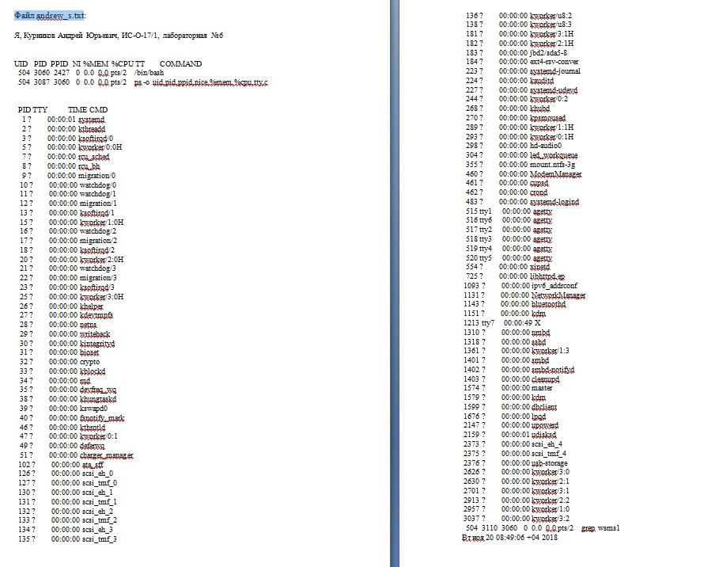
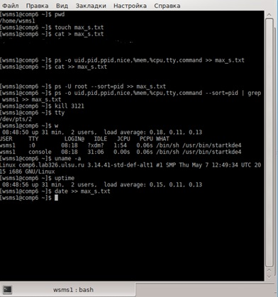
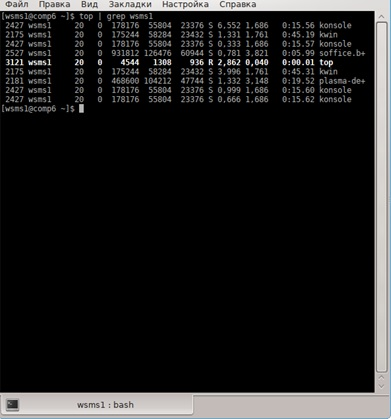

1. Открываем консоль. 2. Убеждаемся, что находимся в своём домашнем каталоге, с помощью команды:$ pwd 4. Создаем файл andrew_s.txt командой:$ touch andrew_s.txt 5. Вводим следующую информацию «Я, Курников Андрей Юрьевич, группа ИС-О-17/1, лабораторная №6». 6. Добавляем в этот файл две пустых строки. 7. Добавляем в этот файл вывод следующих команды ps так, чтобы были видны id пользователя, запустившего процесс, id процесса, id родительского процесса, приоритет процесса, использование памяти процессом, использование CPU процессом, терминал процесса, команда запуска процесса. 8. Добавляем в файл отчёта две пустых строки. 9. Добавляем в файл отчета информацию о процессах запущенных пользователем root. Вывод должен быть отсортирован по номеру процесса. 10. Добавляем в файл отчета информацию о процессах запущенных пользователем student так, чтобы были видны id пользователя, запустившего процесс, id процесса, id родительского процесса, приоритет процесса, использование памяти процессом, использование CPU процессом, терминал процесса, команда запуска процесса, с помощью команды grep. Вывод должен быть отсортирован по номеру процесса. 11. Запускаем ещё один terminal. Вводим команду top так, чтобы контролировать только процессы пользователя student. 12. В другом терминале с помощью команды kill завершаем процесс top. 13. Вывоим результат выполнения команд: tty w uname -a uptime 14. Добавляем в этот файл дату командой «date».
Файл andrew_s.txt

Скриншоты терминала:

